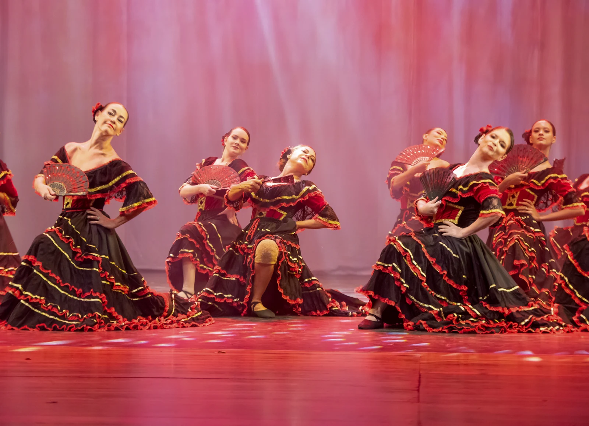

← Back to work
BALLET · 2024
O Lago dos Cisnes
Spanish Dance

ABOUT THE WORK
O Lago dos Cisnes is a ballet production in which I performed as part of the ensemble in the Spanish Dance section.
BALLET · 2024

O Lago dos Cisnes is a ballet production in which I performed as part of the ensemble in the Spanish Dance section.